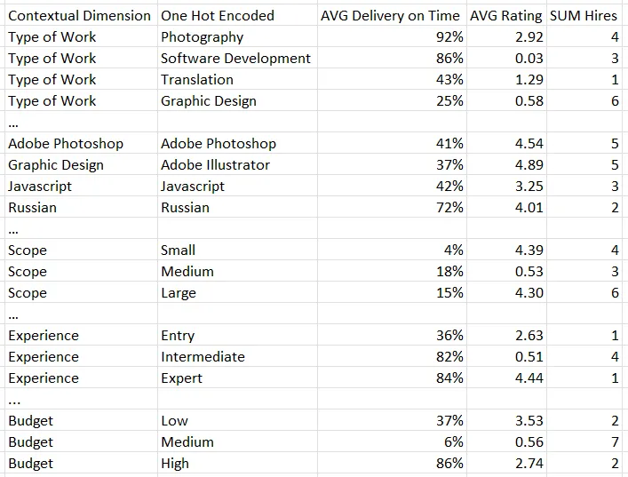
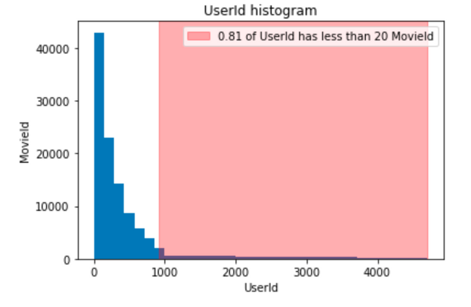
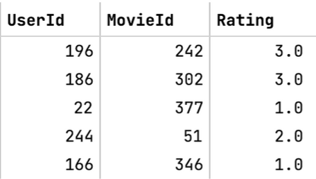
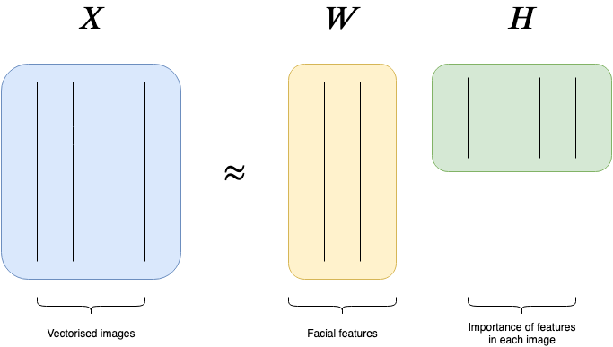
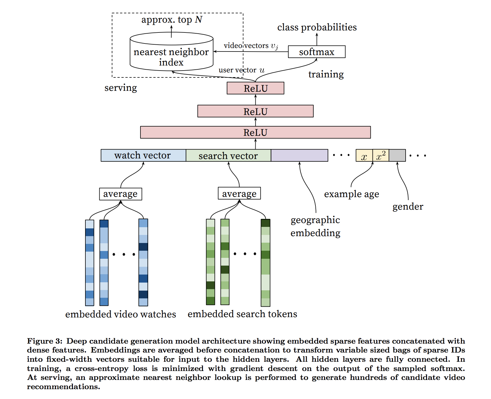
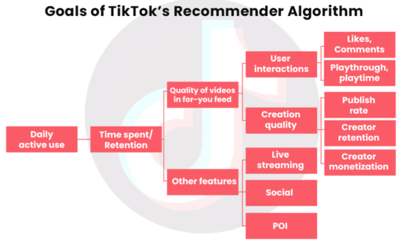
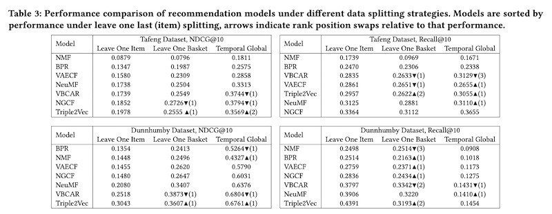

Recommendation
Misc
- Resources
- Packages
- {{cornac}} - Focuses on making it convenient to work with models leveraging auxiliary data (e.g., item descriptive text and image, social network, etc). Cornac enables fast experiments and straightforward implementations of new models. It is highly compatible with existing machine learning libraries (e.g., TensorFlow, PyTorch).
- {{lightfm}} - Python implementation of a number of popular recommendation algorithms for both implicit and explicit feedback.
- {{merlin}} - Open source library providing end-to-end GPU-accelerated recommender systems, from feature engineering and preprocessing to training deep learning models and running inference in production.
- Model Evaluation
- A temporal split is used, so you have the same users in train as in test. (See article in LightFM)
- Sort by rating in descending order for each user. Otherwise, the metrics will be bad.
- From the model predictions, items already “seen” by the user should be removed from the predictions
- If you have low metrics, for example PrecisionK below 0.1, and you don’t know what the reason is — the data or the model, or maybe the metric calculation
- Check the sparsity index of your user/item matrix (see Metrics >> Misc)
- Use the MovieLens (.zip) dataset and train your model on it.
- If its metrics are low on MovieLens too, then the cause is in the model
- if the metrics are good, then the likely cause lies in the preprocessing and postprocessing stages.
- If Random model and Most popular model (baseline models) metrics are close to ML models, it is worth checking the data — maybe the number of unique items is too low.
- This can also happen if we have very little data, or maybe there is a bug in the training code.
- If values higher than 0.5 for Precision@k look too high and it is worth checking if there is a bug in the script or if we are lowering the sparsity index too much.
- Always compare how many users and items you have left after lowering the sparsity index. Sometimes in the pursuit of quality you can lose almost all users, so you should look for a compromise.
- If you already have a model in production, select the most promising candidates for online AB testing on KPIs. For testing recommender models, also see Experiments, A/B Testing >> Interleaving Experiments
- Baseline models
Most Popular
df[item_col].value_counts()[:top_n]- This model may produce suprisingly good results but it will have low coverage.
- If your company decides to expand the number of items it offers in the future, coverage for this model will be even lower.
- This model may produce suprisingly good results but it will have low coverage.
Random Model
- Outputs random item ids
- “Rich get Richer” problem
- The most popular items get more and more recommendations which creates a feedback loop. This prevents new items or new vendors from getting exposure.
- Solution: Initially make the probability of a recommended item uniform (with some regard to category, etc.) and collect ratings. After enough ratings have been collected include rating as a feature in the ML model
- Kroger’s “Forget Something”
- Feature on checkout page that shows items the customer has previously frequently bought
- Should items be ordered by recency or most frequent?
- Filters
- Seasonal - frequently bought items they’ve bought during major holiday time intervals
- This probably should be put into a separate tab or part of a filter list
- Kroger has this but it’s more of a recommendation list that has seasonal foods. Maybe this should be part of a separate recommendation feature
- Items not on their current grocery list
- Not automatic on Kroger’s but it should be part of preprocessing before the list is presented to the customer
- Seasonal - frequently bought items they’ve bought during major holiday time intervals
- Feature on checkout page that shows items the customer has previously frequently bought
- Ethics
- Yglesias post on Facebook’s (and all social media) only recommending to drive engagement. Makes me think there could be a score based on hate-speech or radicalism using sentiment analysis that could be included into the ranking algorithm that would make more ethical recommendations
- Complimentary item recommendation
- Recommender that’s similar to market basket analysis in that it recommends items that are often bought together with item being purchased.
- Resources
- Filtering Features Based on Contextual Dimensions
- e.g. When the movie is watched or if the user is watching the movie with family or friends (which room it’s watched in might hint at this?)
- Notes from Engineering Features for Contextual Recommendation Engines
- Traditional embedding techniques grows exponentially with the number of contextual dimensions (i.e. see multiverse as an example), alternative approaches like factorization machines can be employed to preserve tractability.
- Using multi-layer perceptrons vs. matrix factorization, there is more flexibility in how embeddings are derived and used to find the most similar items to users. For example, embeddings can be learned whereby different dimensions have different weights in determining the users location in space.
- An outcome could be explicit feedback like a rating, implicit feedback like watch time, or a non-feedback quantity like price.
- Scenario: Outcome = F(I,C)
- Items (I) and context (C) play a dominant role in the recommender, whereas the user takes a backseat.
- e.g. New users with limited user-item history
- Categoricals are 1-hot encoded and aggregation calculations of numerics per category. Then, the category and the new numeric are combined.
- Example
- e.g.
- avg_rating_work_photography = photography (1-hot) x AVG Rating (for photography work) = 2.92 for this prospective employee
- e.g.
- Therefore, each unit/subject has only 1 row.
- Example
- To avoid unnecessary complexity and large dimension spaces, features are filtered based on the user’s context
- Example: Filling a medium scope, medium budget photography job using a jobs website (see above table)
- If prospective employee has other skills besides those pertaining to photography, then those are filtered out
- So, in the above table, variables with “work_photography”, “adobe_photoshop”, “scope_medium”, “budget_medium”, and all the experience variables would be included in the dimension space and the rest would be discarded
- Interactions like AVG Ratings when both the Budget == medium and the experience level == expert are not considered.
- Non-linearities can still be derived by the training algorithm, or additional contextual dimensions can be created as the the product of existing ones.
- Example: Filling a medium scope, medium budget photography job using a jobs website (see above table)
- A tree model (e.g. XGBoost) is trained using this dataset with the outcome being some kind of feedback column (e.g. from employers that hired the person for a job).
- This model’s predictions are used to produce recommendations with this particular context but I’m not sure how that’s supposed to work.
- Items (I) and context (C) play a dominant role in the recommender, whereas the user takes a backseat.
- Scenario: Outcome = F(U, C)
- The recommendation isn’t for a discrete item, but rather a continuous value.
- e.g. a platform recommending the price a property rental company should charge for a property on a weekend.
- The recommendation isn’t for a discrete item, but rather a continuous value.
- Questions
- “We can rebuild this representation now considering each past job as the current job, stacking each past job as a set of additional rows. For past jobs, we can create an additional column to capture explicit feedback received by the freelancer such as being hired, or implicit feedback like being messaged.”
- No idea what “talent” is
{kind=link}
Metrics
Misc
- Also see
- Algorithms, Learn-to-Rank >> Diagnostics
- Similarity Scoring bkmk folder
- Jaccard Index, Map@k
- Compare your recommender click-through rates of your recommender to those of the baseline.
- If your model is producing extremely low metrics, then you could have a sparsity issue
Sparsity Index
\[ \mbox{index} = 1 - \frac{\mbox{interactions} \times \mbox{items}}{\mbox{users}} \]
- Guessing “interactions” are the number of 1s in your user/item matrix
- “Users” and “Items” are the sizes of those two dims in your user-item matrix, so users*items would be the number of entries in your matrix
- Therefore interactions / (users*items) would be the proportion of 1s in your matrix and subtracting 1 makes it the proportion of 0s
- Higher values = sparser user/item matrix
- Typically, a sparsity-index of about 98% is sufficient for training
- Guessing “interactions” are the number of 1s in your user/item matrix
Reducing overly-sparse user/item matrices can have major effects on metric scores
Check user/item distribution

- Also see
Coverage
- The metric allows you to see percentage of items used by the recommendation system.
- Usually very important for businesses to make sure that the content (e.g. movies) they have on their site is used to its full potential.
- Coverage = number of unique items in recommendations / all unique items
Diversity
- High diversity values mean that users have an opportunity to discover new genres, diversify their experience, and spend more time on the site. As a rule, it increases the retention rate and has a positive impact on revenue.
- Can be measured in many different ways
- Average similarity for top_n.
- Median value of the number of unique genres (e.g. movies, books) or another category in hierarchy of product categories.
Mean Reciprocal Rank
\[ \mbox{score}_i = \frac{1}{\mbox{rank}_i} \]
- (Wiki)
- Scores based the rank the recommender model gave the “correct” recommendation when it supplied it’s list of recommendations. (i.e. The second recommendation is the recomendation the model felt was 2nd most likely to be correct)
- The average score is calculated across all recommendations to represent the score of the model.
- Example: 3 queries
.png)
Normalized Discounted Cumulative Gain (NDCG) (Mhaskar, 2015)
\[ \begin{align} &\mbox{NDCG}_{\mbox{pos}} = \frac{\mbox{DCG}_{\mbox{pos}}}{\mbox{iDCG}} \\ &\mbox{where}\;\; \mbox{DCG} = \sum_{\mbox{pos}=1}^n \frac{\mbox{relevance}_{\mbox{pos}}}{\ln(\mbox{pos}+1)} \end{align} \]
Relevant documents appearing lower in the recommendation list are penalized as the graded relevance value is reduced logarithmically proportional to the position of the result
Notes
- Very relevant results are more useful than somewhat relevant results which are more useful than irrelevant results (cumulative gain)
- Relevant results are more useful when they appear earlier in the set of results (discounting).
- The result of the ranking should be irrelevant to the query performed (normalization).
MAP@k - Mean average precision within the top k highest-ranked impressions
- Example: If a user watched movie recommendations ranked 1,2,3 and 5 but not 4th ranked recommendation, then the average score for that user would be (1/1 + 2/2 + 3/3 + 3/4 + 4/5)/5 = 0.91
Precision/Recall@k (article)
- Precision@k
- The proportion of recommended items in the top-k set that are relevant
- Precision@k = (# out of k recommended items that match the observed relevant scores) / k
- k is a user definable integer that is set by the user to match the top-n recommendations objective (i.e. k = n)
- Example: 80% precision means on average that 80% of the top-n recommendations predicted by the model are relevant to the user.
- Issue: If there are no items recommended. i.e. number of recommended items at k is zero, we cannot compute precision at k since we cannot divide by zero.
- In that case we set precision@k to 1. This makes sense because in that case we do not have any recommended item that is not relevant.
- Recall@k
- The proportion of relevant items found in the top-k recommendations
- Recall@k = (# of k recommended items that match the observed relevant scores) / (total # of true relevant items)
- k is a user definable integer that is set by the user to match the top-n recommendations objective (i.e. k = n)
- Example: 40% recall means on average 40% of the total number of the (observed) relevant items appear in the top-n results.
- Issue: If there are no items recommended. i.e. number of recommended items at k is zero, we cannot compute precision at k since we cannot divide by zero.
- In that case we set recall@k to be 1. This makes sense because we do not have any relevant items that are not identified in our top-k results.
- Relevance - A relevant item for a specific user-item pair means that this item is a good recommendation for the user in question.
- Example: User/Movie
- Assume that any true (i.e. observed) rating above 3.0 corresponds to a relevant item and any true rating below 3.0 is irrelevant.
- The threshold is subjective. There are multiple ways to set this threshold value such as taking into consideration the history of ratings given by the user.
- Under the above definition, the movies in the first 2 rows are “relevant” to those users, and the last three movies would be “irrelevant” to those users
- Assume that any true (i.e. observed) rating above 3.0 corresponds to a relevant item and any true rating below 3.0 is irrelevant.
- Example: User/Movie
- Recommended - Items are generated by recommendation algorithm with a predicted rating greater than the relevance threshold
- In calculations, ignore all the ratings where the actual value is not known
- Precision@k
RecList (article, article) - Behavior tests; black-box-ish py library that takes a sort of sentiment analysis approach to grading recommenders
- {checklist} for recommender systems (see Diagnostics, NLP >> Behavioral Tests >> Misc >> Packages)
- Principles
- Complementary and similar items satisfy different logical relations
- While similar items are interchangeable, complementary ones may have a natural ordering
- e.g. Recommend hdmi cable if a tv is bought, but not a tv if a hdmi cable is bought.
- Not all mistakes are equally bad
- Example: Truth: When Harry Met Sally
- Recommending Terminator is a worse miss than You’ve Got Mail
- Example: Truth: When Harry Met Sally
- Some groups are more important than others
- Tolerate a small decrease in overall accuracy if a subset of users we care about is happier
- Example: Promoting Nike products so if the recommender results in substantial increased Nike Sales, for Italian users on iphones it becomes terrible, then that’s an acceptable trade-off
- Complementary and similar items satisfy different logical relations
RGRecSys (Salesforce)
{kind=link}
{kind=link}
{kind=link}
Collaborative Filtering
- Focuses on the relationship of users and items in question (ideal when the data contains ratings for the various items offered).
- Example person A and B listen to Song X
- If person B listens often to song Y, then A is very likely to like song Y as well.
- Differences in embeddings can be used to find analagous product relationships
- I think for this to work, you’d have some sort of product description (e.g. ingredients, materials, comments, consumers describing taste, feel, look, etc.) embedding and not just product name embeddings.
- Example: Find the closest diet soft drink to a brand that doesn’ t offer a diet version of their soft drink
- Calculate the difference between the diet coke embedding and coke embedding
- Find a diet soft drink embedding that has a similar delta with the soft drink embedding that doesn’t offer a diet version.
- Also read about applying regularization after SVD to control for overfitting(?)
- Instead of K-NN, a correlation matrix can be used to find similar items after an item has been inputted.
- Clustering embeddings
- kNN is has O(N*K) complexity, where N is the number of items and K is the size of each embedding.
- Approximate nearest neighbor (ANN) algorithms typically drop the complexity of a lookup to O(log(n))
- kNN is has O(N*K) complexity, where N is the number of items and K is the size of each embedding.
Non-Negative Matrix Factorization (NMF)
- Misc
- Packages:
- {NMF}
- Methods
- Alternating Least Squares (ALS)
- Spark has recommendation model that uses this algorithm
- Hierarchical Alternating Least Squares (HALS)
- Alternating Least Squares (ALS)
- Packages:
- Decomposes the sparse user-item matrix (N_users ⨯ N_items) to 2 lower dimensional matrices (W & H)
- The original matrix must have all non-negative entries (I think) The product of W and H is an approximation of the original user-item matrix. Being an approximation is how it’s different from SVD This is because the 2 resulting matrices are constrained to be non-negative (every elt is non-negative) instead of orthogonal
| __ | SKU1 | SKU2 | SKU3 |
| CUST1 | 0 | 1 | 1 |
| CUST2 | 0 | 0 | 1 |
| CUST3 | 1 | 0 | 0 |
I don’t think these are indicator columns. I think they’re quantities, so each cell can have any positive integer value (or zero).
Customer Segment Matrix, W: N_users ⨯ N_latent_factors
- Each column is a “segment” or “basis”
- Each cell is the customer’s score for that segment
Product Segment Matrix, H: N_latent_factors ⨯ N_items
- Each row is a “segment” or “basis”
- Each cell is the product’s score for that segment
The dimension of “N_latent_factors” is a tuning parameter
If a customer and product have high scores for the same segments, then our factorization is implying that this cell in the customer-by-product matrix has a high value.
- A customer’s predicted rating for an item is calculated by multiplying the customer vector by the item vector
- In general, by multiplying both W and H matrices, we end up with an estimate of the original matrix, but more densely filled with all of our predicted ratings
The resulting latent dimensions will capture the most relevant information or characteristics about each customer and item and therefore improve the performance of the downstream clustering task
Results can be visualized with a heatmap
- Example had 2 heatmaps (customer segment matrix, product segment matrix)
- A dark cell for customer i and segment j says that the customer prefers products with high scores in segment j (dark cells in the product heatmap)
- I think the scores are normalized, so closer to 1 means a stronger association
Issues
- Cold Start Problem - When you have new users or items that you want to make predictions for since the model had no possibility to learn anything for them, leaving you with basically random recommendations for them
- See LightFM for potential solution
- User-Item matrices can be too sparse
- See Metrics >> Misc >> Sparsity Index
- Solutions:
- Remove some users or items that have low interaction counts (i.e. 1s in user/item matrix)
- Develop a hierarchy of information about the product—from brand, to style, to size (or SKU), and choose the appropriate level of the hierarchy to use
- Factorization parameters
- Determine the starting state of the matrix in the estimation process (i.e. which product information to use? see 1st issue)
- loss function
- Frobenius norm and the Kullback-Leibler divergence commonly used (at least in NLP) to minimize the distance between the user-item matrix and its approximation (W x H)
- \(k\) - Number of segments
- Too many segments, and the information is hard to digest; too few, and you are not explaining the data well
- \(\alpha\) - A regularization parameter for learning W and H
- Regularization is an optional technique that can be used to have more control over how outliers can influence the algorithm
- \(\mbox{tolerance}\) - Stopping condition for the NMF algorithm. i.e. how close is the approximation X ≈ W x H.
- Lower tolerance means more training iterations
- Cold Start Problem - When you have new users or items that you want to make predictions for since the model had no possibility to learn anything for them, leaving you with basically random recommendations for them
Use Cases
- Developing product-based customer segments to build need-based personas
- Deciding which products should be offered together as a bundle
- Building a product recommendation engine that uses a customer’s segment to determine which products should be merchandised
- Similar items beget similar ratings from similar users
- Topic Analysis
- Also see NLP, Topic >> NMF
- Pick a couple columns of a df (e.g. movie titles, plot descriptions)
- tf-idf the plot descriptions and remove stopwords, names, etc.
- Apply NMF
- For each segment (rows) in H, find the k most important words (columns) (i.e. words with top k scores)
- Each segment is a genre. Use the words to label the genres for the movies.
- Adjusting the number of segments might produce more coherent results if necessary.
Example (word2vec, GMM, HDBSCAN)
- Notes from https://towardsdatascience.com/using-gaussian-mixture-models-to-transform-user-item-embedding-and-generate-better-user-clusters-a46e1062d621
- Music playlist data: Users hash ids (users), Artist names (items)
- Steps
- Items are characters so apply word2vec to get embeddings
- Each unique item will have a numeric vector (item_vec) associated with it.
- For each user’s playlist, compute average vector of all the item vectors associated with it.
- (item1_vec + item2_vec + …)/n
- Each user is represented by a (averaged) vector
- We have item_df which has each item and its word2vec numeric representation, and we have a user_df which has each user and their playlists represented by a mean embedding numeric vector
- Fit a gaussian mixture model, gmm_mod, with the item_df
- For each user, get vector of probabilities of that user belonging to each cluster by user_probs <– predict(gmm_mod, data = user_df)
- By increasing the number user_df features by creating gmm cluster probabilities, it helps other clustering algorithms separate users more easily.
- Cluster user_probs using HDBSCAN
- Where user_probs should look like col1 = users, col2 = gmmclust1_probs, col3 = gmmcluster2_probs, etc.
- Items are characters so apply word2vec to get embeddings
- Optional processing that can improve results
- Logging and standardizing before clustering
- Removing outliers (e.g. very popular artists) at the start
{kind=link}
LightFM
- Creates embeddings for additional features of the user and the product. Then, adds all the user embeddings together and adds all the product embeddings together and proceeds as normal
- In the cold start case, the new user gets a default embedding for “user_id” and “product_id”, but by using the additional feature embeddings, you get an informative rating.
- Misc
- Notes from A Performant Recommender System Without Cold Start Problem
- Paper (2015)(code)
- Results (only tested on 2 datasets w/binary labels)
- “In both cold-start and low-density scenarios, LightFM performs at least as well as pure content-based models, substantially outperforming them when either (1) collaborative information is available in the training set or (2) user features are included in the model.”
- “When collaborative data is abundant (warm-start, dense user-item matrix), LightFM performs at least as well as the MF model.”
- “Embeddings produced by LightFM encode important semantic information about features and can be used for related recommendation tasks such as tag recommendations.”
- Results (only tested on 2 datasets w/binary labels)
- Method Comparison
{kind=link}
{kind=link}
Content-based
- Measure similarities in product characteristics and matching based on the strength of the measures.
- Various similarity scoring algorithms
- Density Adjusting
- Vector Embedding
- Co-Occurrence
- Collaborative Topic Modeling/Regression (CTM/CTR) for text-based items with enhanced accuracy and out-of-matrix prediction capabilities. * out-of-matrix capability: able to generalize the recommendations for new, completely unrated items: since no ratings are observed for item j, a model without this capability cannot derive its latent vector of qualities.
- Built on top of Latent Dirchlet Allocation (LDA) and Probabilistic Matrix Factorization (PMF)
Company Recommenders
- Spotify - Truncated SVD of user-item matrix then K-NN to find similar groupings
- Youtube
- Paper
- Similar to GMM example (above) except:
- a DL model takes the embeddings and outputs class probabilities instead of a GMM
- approx-kNN is used instead of HDBSCAN to cluster users
- Combines two different deep neural networks, a first to select good candidate videos that you’d like if you watched, and a second to pick the best candidates that you are most likely to watch the longest. (Think the candidate NN is the one shown in the figure)
- TikTok
- Notes from:
- The Batch
- Summarizes a nytimes article of a leaked internal document
- TikTok’s Secret Sauce
- The Batch
- Flow chart starts with the primary goal on the left (increase Daily Active Use). From left to right, it breaks down variables into other variables that are probably predictive of the variable preceding it. Therefore maximizing the right-most variables will increase the primary KPI (daily active use)
- For each user, videos are ranked according to an expected value equation (i.e sum of probabilities and values): Plike x Vlike + Pcomment x Vcomment + Eplaytime x Vplaytime + Pplay x Vplay
- Ps are likely predicted values that the user will do the action (e.g. like, comment, play) for a particular video.
- Vs are values that the tiktok has determined for that particular action
- Maybe determined by a regression standardized coefficient (daily_active_use ~ comment + …) or variable importance value
- E may be “estimated.” Might be a descriptive statistic for a user. e.g. avg playtime given var1, var2, etc.
- maybe the vars are the “Other features” or Creative quality variables, etc.
- The Batch article discusses ways to penalize videos
- UI design: Swiping instead of scrolling
- Treats each video more or less independently to assess its viral potential, caring relatively little about how many followers the creator has
- More exploration, less exploitation
- There is a tradeoff between safe but somewhat boring recommendations that are similar to recommendations that worked well in the past (“exploitation”), and risky recommendations that are unlikely to be good but have a high payoff if they do turn out to be good (“exploration”).
- Places a relatively high emphasis on exploration compared to other platforms
- TikTok is able to take risks because all it takes is a swipe (see UI design and article for details)
- Notes from:
- Netflix
- Uses a Embarrassingly Shallow Autoencoders (EASE) for embeddings
- Uses Propensity Correction (Paper) to prevent feedback loops which can bias the recommender
{kind=link}
{kind=link}
Other Notes
RecSys 2020 — Takeaways and Notable Papers
- Inverse propensity scoring was a popular approach taken to debias recommendations
- Increased shift towards sequence models (with SASRec (2018) and BERT4Rec (2019) being common benchmarks) and bandit and reinforcement learning for recommender systems
- Three sources of recommendation complexity, namely:
- Placement: Where is the recommendation located on the user interface?
- Person: Who is seeing the recommendation? What are her past experiences with the recommendation placement?
- Context: What is going on at that moment? What are the user’s needs?
- There are many contexts where similarity is not required or can worsen recommendations. For example, users might want a change of pace or mood from that horror movie they just watched. Also, does the user stick to a specific genre (e.g., Korean dramas) or hop around diverse genres? A better understanding will help improve the user experience.
- Different data splitting strategies (for train and validation) can affect the relative performance of recommendation systems in offline evaluation
- Splitting strategies
- Leave-one-last: Leave one last item, leave one last basket/session
- Temporal: Temporal split within each user, temporal split (on same date) globally
- Random: For each user, split interactions into train and test data
- User: Split some users into train, the rest into test
- Relative performance of recommenders changed often across splitting strategies (indicated by the rank swaps)

- Splitting strategies
- Model Evaluation
- SR-GNN: Best hit rate, mean reciprocal rank, and nDCG
- V-STAN: Best precision, recall, and mean average precision
- V-SKNN, GRU4Rec: Best coverage and popularity
- STAMP: Satisfactory in all metrics
- Using human experts to evaluate recommendations
- In contrast to the offline evaluation metrics, human experts found GRU4Rec to have very relevant recommendations. However, because its recommendations did not match the IDs of products added to cart, GRU4Rec did not perform as well on offline evaluation metrics.
- STAMP and GRU4Rec performed best in the second step and STAMP was put through an A/B test. This led to a 15.6% increase in CTR and an 18.5% increase in revenue per session.
- Similarity
- Matrix factorization faster w/sufficient regularization outperformed and was faster than DL approaches
- Adding unexpectedness to recommendations to add freshness
- Two kinds
- Personalized: Some users are variety seekers and thus more open to new videos
- Session-based: If a user finishes the first episode of a series, it’s better to recommend the next episode. If the user binged on multiple episodes, it’s better to recommend something different.
- Two kinds
- Bad idea to use default parameters for Word2vec-based recommendations
{kind=link}